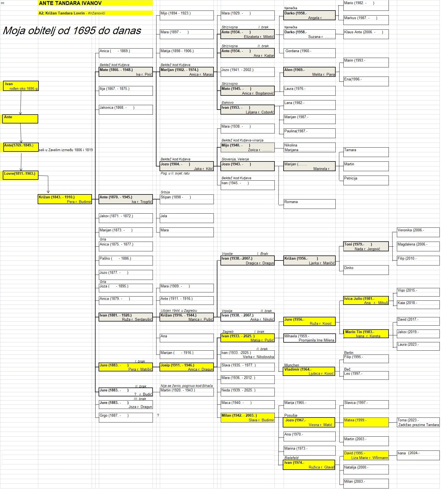
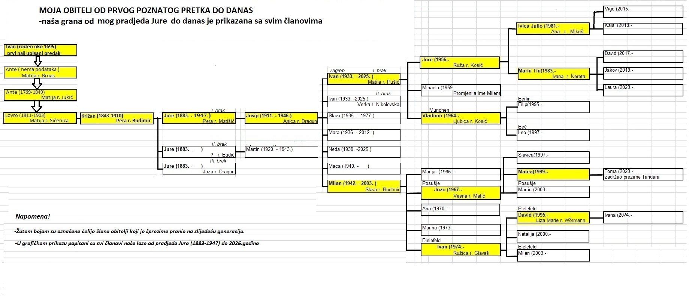

Ante Tandara, vjerojatno godinu dana mlađi od Petra, bio je sin Ivana Tandare. Oženio se Matijom Brnas te su imali sinove Antu, Filipa i Pavla, te kćeri Jaku, Lucu i Ružu. O Pavlu nema drugih podataka osim zapisa o rođenju.
Ante kao najstariji Antin sin, oženio se 1801. Matijom Jukić. Imali su sinove Lovru, Miju i Petra, te kćeri Peru, Ružu, Anticu, Ivu i Mariju. O Petru nema drugih podataka osim zapisa o rođenju.
Prema popisu stanovništva iz 1819., Ante je živio u Zavelimu, a njegov brat Filip u Ričicima. Njihovi potomci kasnije su se proširili po cijeloj Hrvatskoj, Europi i Kanadi.
Oženio se Matijom Sičenica. Imali su sinove Marijana i Križana.
Oženio se Matijom Kovač. Imali su sinove Juru, Marka, Stipana i Jozu, te kćeri Ivu, Maru i Matiju. Za Stipana nema podataka osim za rođenje pa se pretpostavlja da je umro mlad ili se odselio. Marijanovi potomci, po njegovim sinovima Marku i Juri nose nadimak Lovrinovići. Nadimak potječe od od Marijanova oca Lovre. Lovrinovići danas žive u Popovači, Sarajevu i Stobreču.
Oženio se Božicom Pušić. Imali su sina Mirka i kćer Ivu.
Oženio se Anicom Kliić. Imali su sinove Milana i Vladimira koji je umro sa 14 godina, te kćeri Dragicu, Mariju i Nediljku.
Oženio se Svjetlanom Trifunović. Dobili su sinove Vladimira i Dalibora.
Vladimir Milanov oženio se sa Claire Tacher, imaju sina Alexandra jamesa i živi u Londonu. Drugi sin Dalibor se oženio Amelom Nezirović i imaju sina Damira i kćer Teu. Žive u Sarajevu.
Oženio se Perom Budimir. Imali su 15 djece, od toga sedmero djece je umrlo u dobi do desete godine. Zanimljivost je da je drugi Križanov sin Ilija je da Ilija poginuo od uboda vola. Križanovi potomci po sinovima Mati, Anti, Ivanu i Juri nose nadimak Križanovići i žive u Zagrebu, Đakovu, Kutjevu, Bektežu, Strizivojni, Vrpolju i više država Europe.
Najstariji Križanov sin, oženio se Ivom Pirić. Imali su sinove Miju, Marijana i Jozu, te kćeri Maru i Matiju. Mijo se nije ženio.
Oženio se Anicom Maras, sa njom imao sinove Antu, Jozu, Matu i Ivana, te kćer Maru.
U prvom braku sa Elizabetom Miletić dobio je sina Darka i kćer Gordanu. U drugom braku sa Anom Kajtar nema djece. Darko sa obitelji živi u Njemačkoj.
Nije se ženio.
U braku s Anicom Bogdanović dobio je sina Alena i kćer Lauru. Alen s obitelji živi u Slavonskom Brodu.
Četvrti Marijanov sin, oženio se Ljiljanom Cobović. Imaju sina Marijana, te kćeri Lanu i Paulinu. Žive u Đakovu, gdje Ivan vodi vlastiti odvjetnički ured.
Najmlađi sin Mate i Ive Pirić, oženio se Jakom Kliić. Imali su sinove Miju, Jozu i Ivana te kćer Maru. Jozo je poginuo u Drugom svjetskom ratu, a Mijina obitelj danas je u Bektežu kod Kutjeva.
Živi u Bektežu kod Kutjeva i ima tri kćeri.
Živi u Sloveniji. Ima sina Marijana i kćer Romanu. Marijan ima sina Martina te kćeri Tamaru i Petriciju.
Treći Križanov sin, oženio se Ivom Trogrlić. Imali su sina Stipana, te kćeri Jelu i Maru. Stipan je odselio u Srbiju i nije poznato je li imao potomke.
Osmi Križanov sin, oženio se Ružom Serdarušić. Imali su sinove Antu (umro s pet godina), Križana i Marijana (umro kao dijete), te kćeri Maru i Anu.
U braku s Maricom Pušić imao je sina Ivana. Križan je 1944. godine ubijen u Zagrebu.
Ženio se dva puta.
Iz prvog braka s Dragicom Dragun imao je sina Križana.
Križan Ivanov i supruga Ljerka Maričić imaju sinove Tonija i Dinka te žive u Vrpolju.
Iz drugog braka s Ankom Nikolić dobio je kćeri Biljanu i Belinu.
Deveti Križanov sin, ženio se tri puta.
Prvi brak bio je s Perom Matišić, koja je iz poznate hrvatske glazbene obitelji, a s kojom je imao sina Josipa. Pera je umrla 1919. godine od španjolske gripe. Drugi brak Jure Križanova bio je s djevojkom iz roda Budić. Imali su sina Martina koji je poginuo 1942 kod Bihaća i nije se ženio. Treći brak bio je s Jozom Dragun, bez djece.
U braku s Anicom Dragun dobio je sinove Ivana i Milana, te kćeri Slavu, Maru, Nedu i Macu.
Ženio se dva puta.
Iz prvog braka s Matijom Pušić dobio je sinove Juru i Vladimira, te kćer Mihaelu (krsno Milena).
Jure se oženio Ružom Kosić i imaju sinove Ivicu Julia i Marina Tina. Vladimir se oženio Ljubicom Kosić, imaju sinove Filipa i Lea. Dakle, ovdje se radi o braku dva brata i dvije sestre.
Iz drugog braka s Verkom Nikolovski Ivan nije imao djece. Ivan je umro u Zagrebu 2025.g. u 93 godini života. Laka ti zemlja dragi moj oče!
Mijo, drugi Antin sin, oženio se Mandom Martinović. Imali su devetero djece: Jozu, Antu, Matu, Miju, Petra te Ivu, Matiju, Ružu i Anticu.
O sinu Miji nema drugih podataka osim zapisa o rođenju. Pretpostavka je da je umro mlad ili odselio u nepoznatom smjeru. Potomci po sinovima Jozi, Mati i Petru nose nadimak Tucići, nadimak dobiven zbog sklonosti članova obitelji za ljubavnim avanturama.
Oženio se Ivom Bilojelić. Imali su sinove Matu, Jozu i Nikolu (umro s 6 godina), te kćeri Matiju, Jelu, Maru i Ivu.
Nije se ženio.
Oženio se Jelom Škorić. Imali su sinove Marijana, Matu, Pilipa i Nikolu, te kćeri Jelu, Maru, Katu i Milu.
Oženio se Ivom Čorbić. Imali su sinove Ivana i Milana, te kćeri Maru, Dragicu, Katu i Mariju.
Oženio se Anom Pušić. Imaju sina Zdenka i kćer Kristinu.
Zdenko se ženio dva puta. Iz prvog braka ima sina Tomislava, a iz drugog braka sa Kristinom Topić ima kćer Anu.
Ženio se dva puta.
Iz prvog braka s Marijom Pušić ima sina Nedjeljka, te kćeri Dragicu, Ljubicu i Tanju.
Nedjeljko sa Ivanom Božičević imaju kćeri Mariju i Tinu.
U drugom braku Milan nema djece.
Mate je drugi Antin sin, oženio se Matijom Gudelj. Nije imao djece.
Najmlađi Antin sin, oženio se Mašom Gudelj sa kojom je dobio sina Antu.
Ante je u braku s Renatom Nagy dobio sina Antu. Ante Antin je u braku s Valentinom Juriša također dobio sina Antu. Neobično je da su tri generacije davale svojim sinovima ista imena Ante.
Nije se ženio. Umro je u 26. godini života.
Ženio se dva puta.
Iz prvog braka s Tomicom Kovač imao je sina Ivana koji je umro u sedmoj godini.
Iz drugog braka s Ivom Vlajčić imao je sinove Martina (umro u 24. godini) i Juru, te kćer Ivu.
Oženio se Matijom Škorić. Imali su sinove Antu i Matu, te kćeri Milu, Stanu i Ivu.
Oženio se Milom Đikić. Imali su sinove Ivana, Milana i Srećka, te kćer Matiju. Milan i Srećko su oženjeni, svaki ima po dva sina. Žive u Đakovu.
Oženio se Danicom Malenica. Imaju sina Tomislava, te kćeri Mariju, Milu i Anu.
Tomislav je u braku s Vlatkom Dolić. Imaju sina Mateja i kćer Danijelu, te žive u Podstrani kod Splita.
Najmlađi Mijin sin, oženio se Matijom Tandara. Imali su sinove Matu, Stipana, Antu (umro kao dijete) i Iliju te kćer Anđu.
Oženio se Katom Cimerman. Imali su sina Ivana i kćer Ankicu.
Oženio se Pavicom Kralik. Dobili su sina Emila i kćer Ivanu.
Emil je u braku sa Zoricom Nađ. Imaju kćeri Marijanu i Nikolinu. Žive u Kutjevu i poznati su po proizvodnji vina.
Oženio se Jozom Malenica. Imali su sina Ivana i kćer Ankicu.
Oženio se Anom Budimir. Imali su sina Mirka, te kćeri Mirjanu, Mariju i Ankicu.
Mirko je u braku s Dragicom Čamber. Imaju sinove Ivana i Josipa, te kćer Anu Mariju. Žive u Dugom Selu.
Najmlađi Petrov sin, oženio se Anicom Škorić. Imali su sinove Marijana i Mirka, te kćeri Macu, Nedu i Dragicu.
Oženio se Frankom Kovač. Dobili su sinove Nediljka (umro kao dijete) i Mirču, te kćeri Ivanku, Mariju i Nedu.
Mirčo i supruga Vesna Zetović imaju sina Miroslava i kćer Sonju. Žive u Đakovu.
Oženio se Katom Kovač. Dobili su sinove Marinka, Ivicu i Antu, te kćeri Anku i Mariju. Marinko, Ivica i Ante žive u Zagrebu i imaju obitelji.
Drugi Antin sin Filip, ostao je živjeti u Ričicama. 1802. oženio se Matijom Parlov. Imali su sinove Martina, Matu i Ivana, te kćeri Jozu, Jelu, Jurku, Anticu i Ružu. Za Matu i Ivana postoji samo datum rođenje pa se pretpostavlja da su umrli mladi ili odselili.
Oženio se Mandom Manenica. Imali su sinove Jerka, Iliju, Ivana, Martina i Ivana, te kćeri Tomicu, Luciju i Ivu. Stariji Ivan i Martin umrli su kao djeca. Za drugog sina Ivana mlađeg ne postoje podaci. Ili je umro mlad ili je odselio.
Oženio se Ivom Topalušić. Imali su sinove Martina, Luku (umro kao dijete) i Ivana.
Oženio se Ivom Kovač. Imali su kćeri Matiju, Maru i Ivu.
Oženio se Jakom Martinović. Imali su sinove Matu i Martina, te kćeri Anu i Tomicu.
Rođen 1898. godine, prešao je živjeti na materino imanje u Martinoviće. Oženio se Matijom Ležeta, a njegovi potomci nose nadimak Pikići. Za Matu Ivanova govorilo se: „Takvoga ne piki niti rađa majka.“ Po tome je dobio nadimak Piko, a njegovi potomci nadimak Pikići. Mate i Matija Lažeta imali su sinove Nikolu, Mirka i Marijana, te kćeri Milicu i Dragicu.
Oženio se Matijom Kilić. Imali su sinove Damira i Željka, te kćeri Veru i Mariju.
Ženio se dva puta.
Iz prvog braka s Marinom Čelan ima sina Tina.
Iz drugog braka s Lucijom Modrić ima sina Lea, te kćeri Žanu i Doris.
Damir s obitelji živi u Njemačkoj.
Oženio se Anitom Košćak. Imaju sinove Nikolu i Marka. Žive u Splitu.
Drugi Matin sin, oženio se Anđelkom Dragicom Mršić. Imali su sinove Nedjeljka, Zdravka i Miroslava.
Oženio se Danicom Jaginović. Dobili su sinove Mirka, Ivana i Križana.
Oženio se Dubravkom Brajković. Dobili su sinove Antu i Vedrana
Najmlađi Mirkov sin oženio se Ružicom Krajinović. Imaju sina Josipa, te kćeri Ines,i Anu. Obitelj živi u Splitu.
Najmlađi sin Mate i Mare Topalušić, oženio se Tomicom Tandara. Imali su sinove Petra, Marijana (poginuo u Drugom svjetskom ratu), Slavka, Antu i Matu, te kćeri Milu, Dragicu, Anu i Nevenku.
Najstariji Tomin sin, oženio se Katom Novosel. Dobili su sina Ivicu.
Ivica je u braku s Ljubicom Kozić i dobili su sina Hrvoja i kćer Sabinu. Sabina je poznata hrvatska novinarka, trenutačno angažirana na RTL. Obitelj živi u Zagrebu.
Treći Tomin sin iz braka sa Savkom Vukobratović dobio je sina Marka. Žive u Zagrebu.
Četvrti Tomin sin, oženio se Zlatom Vučemil i sa njom diobio sina Draženka.
Draženko je u braku s Nadom Medić. Imaju sina Luku, te kćeri Maju i Mateju. Žive u Bjelovaru.
Najmlađi Tomin sin, oženio se Tonkom Vukičević i dobili su sina Željka.
Željko je u braku sa Ankicom Šitum sa kojom je dobio dva sina, sa kojima žive u Kanadi.



